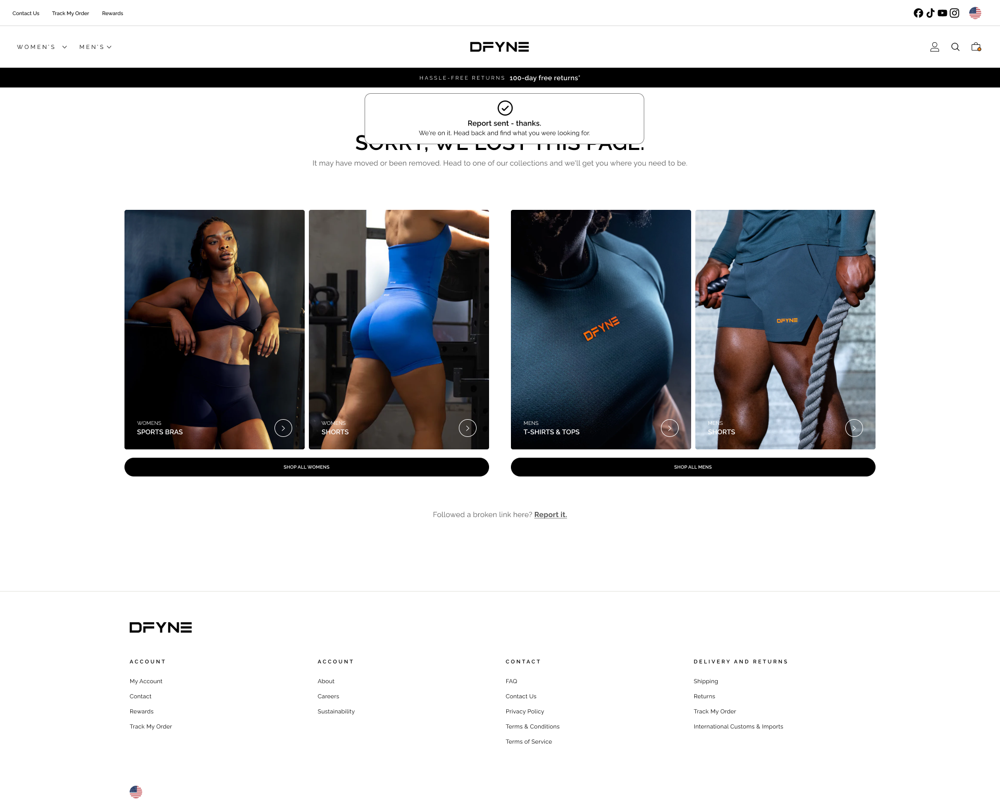
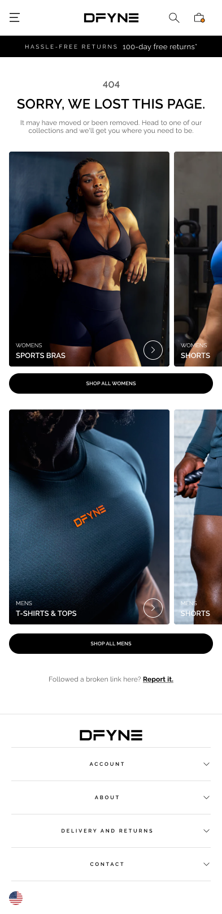

DFYNE · Error State
Turning a dead end into a comeback.
Redesigning DFYNE's 404 page from a stranded moment into a conversion-focused recovery path — completed as a single-day design challenge.
- Role · Product / UX Designer
- Scope · Desktop + mobile, full spec
- Timeline · 1 day, brief to polished deliverable
- WCAG 2.1 AA compliant
01 · The problem
A dead end, not a detour.
Users landing on broken or moved URLs hit a minimal error state with no clear way back — a quiet leak of engagement, sessions, and revenue that nobody was measuring.
Users didn't recognize the problem.
A plain-text link, easily missed.
No recommendations, no search.
02 · The opportunity
Turn the error page into a redemption moment.
A well-crafted 404 retains customers who land on broken URLs, builds brand trust through on-brand, helpful design, and guides users back into the shopping journey — instead of losing them at the door.
03 · Design strategy
Three goals, one page.
Real DFYNE product photography, brand color and type, a tone that's confident and supportive — acknowledges the problem without apologizing for it.
Four high-intent category cards and a prominent "Shop All" CTA tied to real collections — showing what DFYNE sells, not generic links.
A lightweight "Report it" link turns customers into collaborators — every submission feeds future link audits.




04 · Key design decisions
Every choice, a tradeoff owned.
05 · Accessibility & inclusive design
WCAG 2.1 AA, from the ground up.
Built as a foundational principle, not an afterthought — contrast, keyboard support, touch targets and screen-reader semantics were all part of the initial spec.
Headline 21:1, body 7.5:1, "Report it" link 8.6:1 — all clear the 4.5:1 AA minimum, with underlines for color-blind users.
Full tab order, visible 2px focus ring, modal closes on Escape, carousel navigable with arrow keys.
44×44px minimum touch targets, swipe + arrows + keyboard on mobile, every animation respects prefers-reduced-motion.
Semantic <button>/<h1> markup, ARIA labels, modal marked role="dialog".
06 · Design quality validation
No traffic data — so the rigor is the proof.
With no 404 analytics available, validation leans on heuristic evaluation and competitive benchmarking instead of invented metrics.
Competitive benchmark
| Aspect | DFYNE | Glossier | Stripe |
|---|---|---|---|
| Product imagery |
|
|
|
| Category navigation | 4 categories |
|
Minimal |
| Accessibility (WCAG) | AA compliant | Partial | Compliant |
| Mobile experience | Carousel + touch |
|
Responsive |
Verdict: the redesign meets or exceeds retail 404 standards — in good company with the interaction patterns competitors already use.
07 · Next steps
From spec to shipped.
-
Usability testing — 5–8 sessions to confirm category cards read as intuitive and reduce bounce intent.
-
Staged rollout — ship to 10–25% of 404 traffic first, watch for bugs before full launch.
-
Monitor error reports — turn "Report it" submissions into fixed redirects and cleaner link audits.